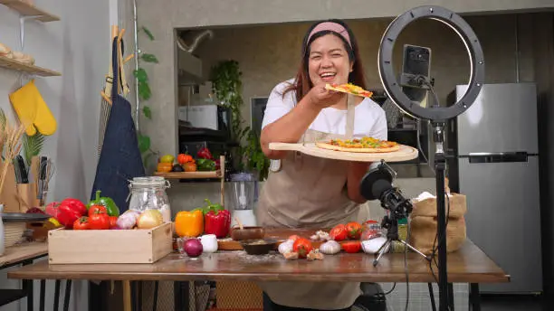
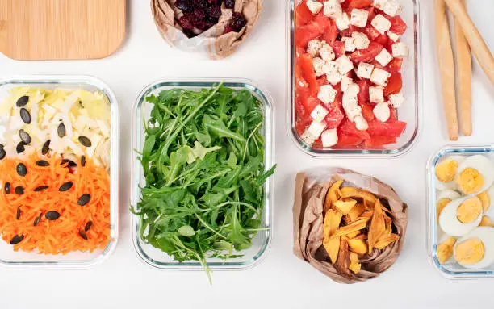

Mastering the Art of Viral Food Challenges
By **Chef Yum**
On July 4, 2025
#FoodChallenges
#Viral
Ever wondered how those incredible food challenges go viral? We dive deep into the secrets behind creating shareable, jaw-dropping culinary feats that get everyone talking. Learn how to pick your ingredients, set the stage, and film your masterpiece for maximum impact. From giant pizzas to multi-layered desserts, get ready to challenge your skills and delight your followers! We'll cover everything from conceptualization to execution, ensuring your next food challenge is a massive hit. Don't just cook, create a culinary spectacle that defines deliciousness!
Read More
The Unexpected Deliciousness of Sweet & Savory Mashups
By **Flavor Fanatic**
On June 28, 2025
#Mashups
#SweetSavory
Pineapple on pizza? That's just the beginning! This post explores the exciting world of sweet and savory food mashups that will blow your mind and tantalize your taste buds. We're talking about everything from chocolate-dipped bacon to balsamic strawberry grilled cheese. Discover the science behind these intriguing flavor combinations and get inspired to create your own unique culinary masterpieces. Prepare to redefine your comfort food boundaries!
Read More

5 Game-Changing Tips for Ultra-Fast Meal Prep
By **Speedy Chef**
On June 20, 2025
#QuickMeals
#MealPrep
Short on time but big on hunger? This blog post is your ultimate guide to revolutionizing your kitchen routine with 5 game-changing tips for ultra-fast meal prep. Learn clever shortcuts, smart ingredient hacks, and efficient cooking techniques that will have delicious, homemade meals on your table in record time. Say goodbye to takeout and hello to healthy, speedy delights!
Read More
This is just a small sample of the vibrant content you'd find on the Yumckify Blog.
Imagine pages upon pages of articles, guides, interviews, and deep dives into the
world of bold flavors and creative cooking. We'd cover everything from the latest
TikTok food trends to sustainable cooking tips, from culinary science simplified
to behind-the-scenes glimpses of our recipe development. Every article would be
designed to inspire, educate, and entertain, ensuring you always have something
exciting to read and try in your kitchen. Expect comprehensive reviews of new kitchen gadgets,
seasonal ingredient spotlights, and in-depth explorations of global food cultures
with a quirky Yumckify twist. Our goal is to make the blog a dynamic hub
for food enthusiasts who crave knowledge as much as delicious meals.
We'll feature guest posts from renowned food bloggers and social media influencers,
share success stories from our community challenges, and provide exclusive previews
of upcoming Yumckify Originals. This is where the story of "turning up the yum factor" truly unfolds.
Stay tuned for a continuous flow of fresh, engaging, and utterly delectable content!